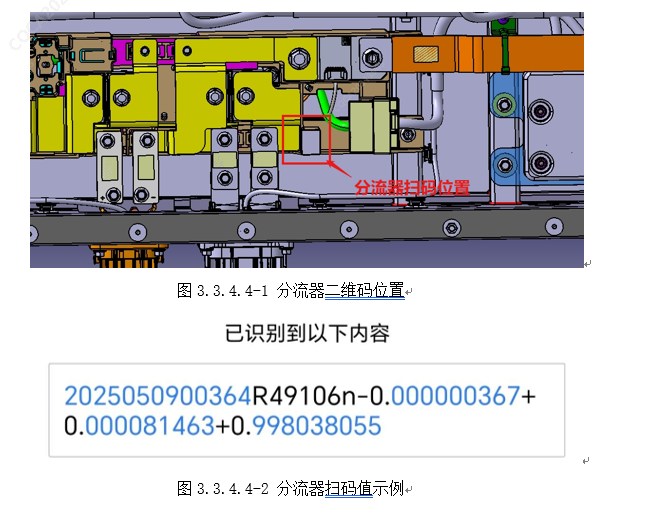
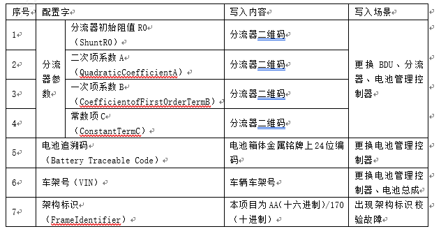

①用周立功CANFD监控动力电池总成，确认此时电池管理系统无故障报出，若存在故障，则按相应的故障排查流程进行检查；②电池还原后，采用专门的气密性检测夹具将动力电池高低压接插件进行封堵，采用气密性检测仪进行检测（方法如4.7所示），检测仍未通过，则通知专业技术人员分析原因并进行排除；检测通过后参照5.5中的要求将电池安装至整车；③整车还原后，先用诊断仪清除整车故障，重新上电后，读取整车故障代码，若无故障则整车恢复正常；若仍存在故障，则按照相应故障代码进行故障排查。④若更换电池管理控制器、分流器或BDU，在电池封盖前，使用扫码设备扫描BDU中分流器二维码，如图3.3.4.4-2分流器扫码值示例。读取并记录分流器初始阻值R0、二次项系数A、一次项系数B、常数项C。（例：，R0=49.106，A=-0.000000367，B=0.000081463，C=0.998038055）

⑤ 更换电池管理控制器、分流器或BDU时，通过诊断仪进行电池管理控制器软件刷写，整车恢复后，需通过诊断仪中电池管理单元BMS中的特殊功能写入，将分流器初始阻值R0、二次项系数A、一次项系数B、常数项C写入电池管理控制器中。⑥更换电池管理控制器或电池总成时，通过诊断仪进行电池管理控制器软件刷写，整车恢复后，需通过诊断仪中电池管理单元BMS中的特殊功能写入，将电池追溯码、车辆VIN写入电池管理控制器中。
⑦配置字清单：
